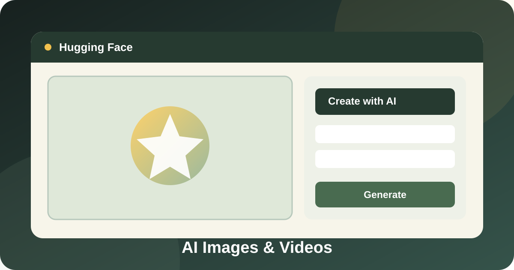

ما هي Hugging Face Spaces؟
Hugging Face منصة استضافة ومشاركة نماذج ومجموعات بيانات وتجارب تفاعلية تسمى Spaces. ويمكن للمطورين نشر واجهة نموذجية للصور أو الفيديو أو الترجمة أو الصوت. لا يوجد نموذج واحد موحد دائمًا؛ تظهر التجارب تبعًا للمطور والمحرر والموارد المتاحة.
أنواع التجارب التي تبحث عنها
- Text-to-Image: تحويل وصف نصي إلى صورة. يمكن استخدامه لتصاميم تمهيدية أو خلفيات أو إلهام بصري.
- Image-to-Image: تعديل صورة موجودة، مثل تغيير الأسلوب أو تحسين الدقة أو إعادة التركيب.
- Text-to-Video: إنشاء مقطع قصير بوصف نصي أو مشهد متحرك؛ التوقيت والجودة قد يختلفان كثيرًا حسب النموذج.
- Image-to-Video: تحريك صورة ثابتة أو تحويل إطار أولي إلى حركة مع قيود على طول المقطع والتداخل.
- Upscaling and editing: تحسين الدقة وإزالة العناصر أو استبدال الخلفيات، مع ضرورة مراجعة التفاصيل النهائية.
اختيار تجربة قابلة للاستخدام
ابدأ بالتجارب التي تعرض حالة Running أو Running on Zero ولا توجد بها رسالة Runtime error أو Configuration error. تحقق من تحديثها الأخير ومعلومات المطور ورخصة النموذج، لا من عدد الإعجابات وحده. اقرأ وصف المشروع لمعرفة حدود الدقة والطول والصيغة والإنتاجية.
كتابة وصف جيد لتوليد صورة
اكتب الهدف والأسلوب والمشهد والإضاءة والتركيب والجودة المطلوبة. تجنب المطالب المتعارضة، مثل صورة واقعية بسيطة مع كثرة تفاصيل غير ضرورية. استخدم استبعادًا فقط إذا كانت واجهة النموذج تدعم هذا الحقل. قد تختلف استجابة كل نموذج عن غيره؛ جرب وصفًا متوازنًا وراجع أربع أو خمس مخرجات بعد تعديل وصف واحد في كل مرة.
توليد فيديو عملي
اختر مشهدًا قصيرًا بحركة واضحة ومسار كاميرا بسيط. صف الحركة والمدة والحجم والهدف البصري، وتجنب وصف مشاهد متغيرة بسرعة. قد تخلق نماذج الفيديو تشوهات بالأيدي أو الأرقام أو حركة غير مستقرة؛ لذلك راجع كل ثانية ولا تنشر المقطع كحقيقة موثقة أو تسجيل واقعي إذا كان مولدًا.
الاستخدام المسؤول والحقوق
لا تنشئ شخصيات حقيقية أو أشخاصًا يشبهون أشخاصًا معروفين دون موافقة، ولا تنتحل هوية أشخاص أو تستخدم الصور لنشر مضلل أو تشويه سمعة. راجع ترخيص النموذج والصورة الناتجة والسياسة المحلية لاستخدامها تجاريًا. الاستخدام في إعلان تجاري يحتاج مراجعة خاصة بعلامة النموذج وشروط Space والحقوق في الصور المرجعية.
حماية الخصوصية والملفات
لا ترفع صورًا شخصية أو مستندات أو بيانات حساسة إلى تجربة لا تعرفها أو لا تثق بشروطها. استخدم صورًا مرخصة أو مملوكًا لك، وتجنب إدخال أسماء أو عناوين أو رموز داخل الأوصاف. قد يحفظ مقدم المساحة المدخلات أو السجلات بحسب السياسة؛ اقرأ شروط الخصوصية قبل التشغيل.
حدود الموارد المجانية
قد تعمل التجربة بنظام طابور، أو تتوقف عند عدم استخدامها، أو تستخدم ZeroGPU أو سعة محدودة. قد تتغير حالة التشغيل يوميًا، وقد تتطلب حساب Hugging Face أو الاعتماد على منصة خارجية. لا تعتبر أن عرض نموذج يشير إلى توفر دائم؛ راجع الحالة مباشرة قبل الاعتماد عليه في مشروع.
الاختبار والاعتماد النهائي
قارن نموذجين لنفس الوصف، وثبت المقادير الأساسية، ولا تنشر النتيجة دون مقارنة بالواقع والهدف. احفظ البيانات الوصفية، اسم النموذج، تاريخ التوليد، وتحميل النسخ الأصلية. هذا يسهل تفسير النتيجة وامتثالها والتراجع عنها عند اكتشاف مشكلة.
الخلاصة
Hugging Face Spaces نقطة دخول مفيدة لاختبار مجموعة واسعة من نماذج الصور والفيديو بلا تثبيت معقد. استخدم التجارب المستقرة، تحقق من الترخيص والخصوصية، وراجع جودة الحركة والتفاصيل الإنسانية والأرقام قبل اعتماد النتيجة في عمل رسمي.